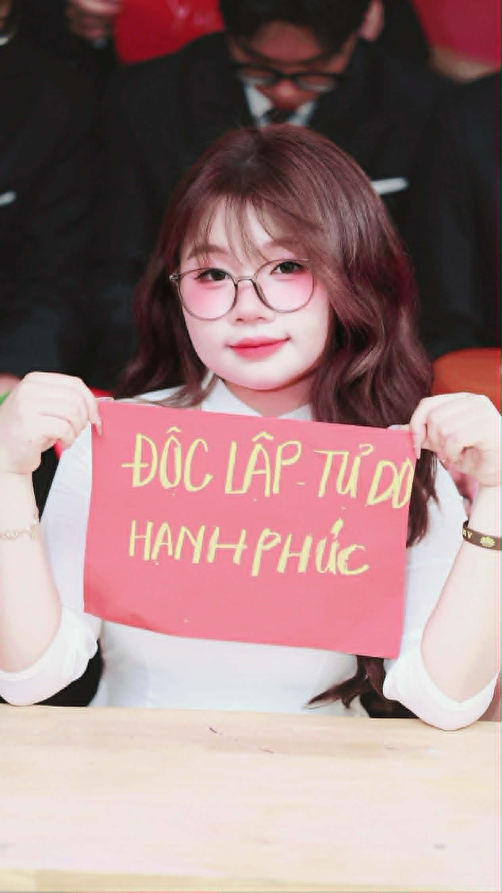

Họ và tên: Nguyễn Thị Anh Thư
Lớp: 12A - Trường THPT Hưng Yên
Quê quán:Hưng Yên
Xin chào! Mình là Nguyễn Thị Anh Thư, học sinh lớp 12A trường THPT Hưng Yên. Mình là người năng động, thích khám phá và luôn muốn trải nghiệm những điều mới mẻ. Mình yêu thích chụp ảnh, nghe nhạc và tham gia các hoạt động thiện nguyện, xã hội để lan tỏa năng lượng tích cực đến mọi người.
🎀 Chụp ảnh
🎀 Nghe nhạc
🎀 Thiện nguyện
🎀 Hoạt động xã hội
Chúc tập thể lớp 12A luôn đoàn kết, cùng nhau cố gắng vượt qua kỳ thi quan trọng phía trước. Mong rằng mỗi chúng ta sẽ đạt được ước mơ của mình và luôn nhớ về những kỷ niệm đẹp bên nhau 💖